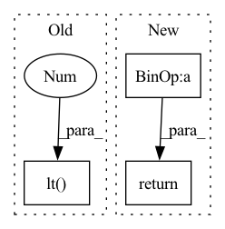

Pattern ID :19959

Before Change
elif ctx.gradient == "identity":
z = y
elif ctx.gradient == "identity_if_towards":
z = torch.logical_or(x, y.lt(0.0))
else:
raise ValueError
After Change
if int(gradient) == _LowerBoundGradient.identity:
return y, None, None
return (((x >= bound) | (y < 0)) * y), None, None
@staticmethod
def forward(ctx, *args):
In pattern: SUPERPATTERN
Frequency: 3
Non-data size: 3
Instances
Fragment ID: 65031088
Project Name: facebookresearch/neuralcompression
Commit Name: 0c2abb98ff14256e4c3dc938ea0f25212476636f
Time: 2021-11-01
Author: allen.goodman@icloud.com
File Name: neuralcompression/functional/_lower_bound.py
M Class Name: _LowerBound
N Class Name: _LowerBound
M Method Name: backward(1)
N Method Name: backward(1)
M Parent Class: Function
N Parent Class: torch.autograd.Function
M File Name: neuralcompression/functional/_lower_bound.py
N File Name: neuralcompression/functional/_lower_bound.py
M Start Line: 32
M End Line: 43
N Start Line: 28
N End Line: 36
'>
Before Change
return ~make_pad_mask(lengths, xs, length_dim)
def get_attn_pad_mask(lengths, xs=None, length_dim=-1):
return ~make_pad_mask(lengths, xs, length_dim).unsqueeze(-2).lt(1)
def subsequent_mask(size, device="cpu", dtype=torch.bool):
ret = torch.ones(size, size, device=device, dtype=dtype)
return torch.tril(ret, out=ret).lt(1)
After Change
return ~make_pad_mask(lengths, xs, length_dim)
def get_attn_pad_mask(lengths, xs=None, length_dim=-1):
mask = ~make_pad_mask(lengths, length_dim)
//mask = mask.expand(-1, xs, -1)
mask = mask.unsqueeze(1).eq(0)
return mask
def subsequent_mask(size, device="cpu", dtype=torch.bool):
ret = torch.ones(size, size, device=device, dtype=dtype)
'>
Fragment ID: 65031084
Project Name: qute012/kosr
Commit Name: e19438c9d4d6bd6af0fa84e9fd93a20e2cf2f828
Time: 2021-02-03
Author: ejrwls012@gmail.com
File Name: kosr/model/mask.py
M Class Name: AnonimousClass
N Class Name: AnonimousClass
M Method Name: get_attn_pad_mask(3)
N Method Name: get_attn_pad_mask(3)
M Parent Class:
N Parent Class:
M File Name: kosr/model/mask.py
N File Name: kosr/model/mask.py
M Start Line: 36
M End Line: 36
N Start Line: 24
N End Line: 27
'>
Before Change
@staticmethod
def backward(ctx, grad_output):
// gate = Variable(torch.logical_or(ctx.mask, grad_output.lt(0.)).type(grad_output.dtype))
gate = Variable(torch.logical_or(ctx.mask, grad_output.lt(0.)).type_as(grad_output.data))
return grad_output * gate, None
def standardized_CDF_gaussian(value):
After Change
pass_through_2 = grad_output < 0
pass_through = pass_through_1 | pass_through_2
return pass_through.type(grad_output.dtype) * grad_output, None
def standardized_CDF_gaussian(value):
// Gaussian
'>
Fragment ID: 65031087
Project Name: justin-tan/high-fidelity-generative-compression
Commit Name: 1f19c75230213ae2e92d73c41813037239dcc9c5
Time: 2020-08-17
Author: jtan@spartan-login2.hpc.unimelb.edu.au
File Name: src/helpers/maths.py
M Class Name: LowerBoundToward
N Class Name: LowerBoundToward
M Method Name: backward(2)
N Method Name: backward(2)
M Parent Class: torch.autograd.Function
N Parent Class: torch.autograd.Function
M File Name: src/helpers/maths.py
N File Name: src/helpers/maths.py
M Start Line: 28
M End Line: 29
N Start Line: 40
N End Line: 45